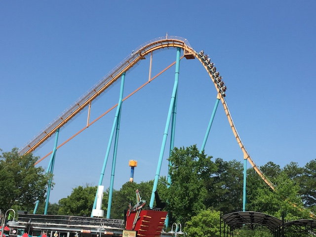
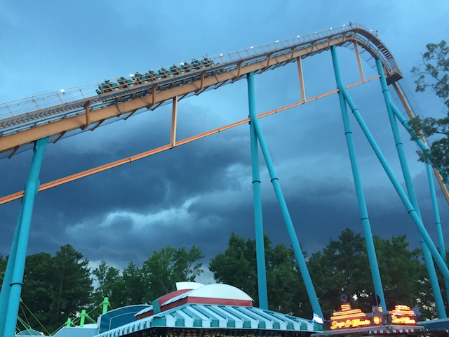
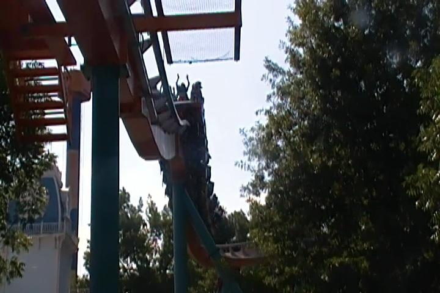
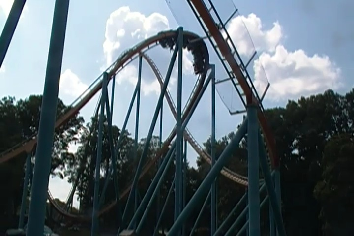
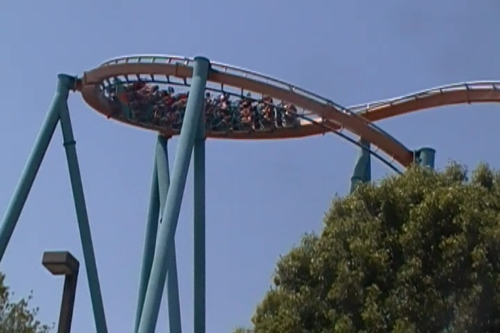
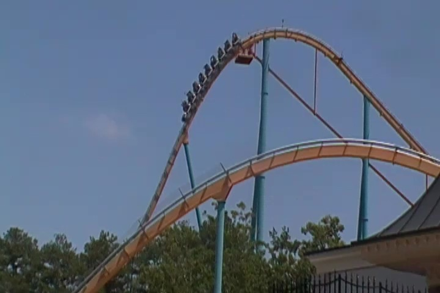
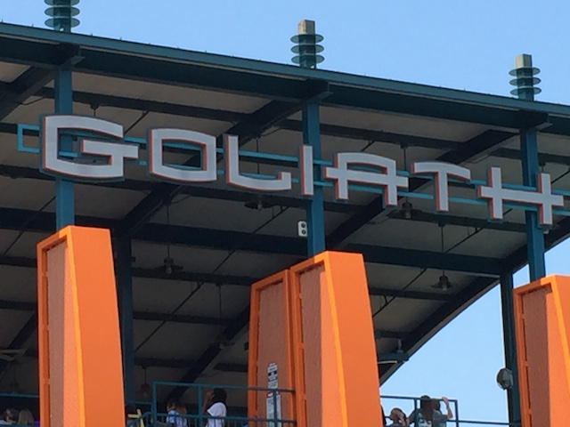
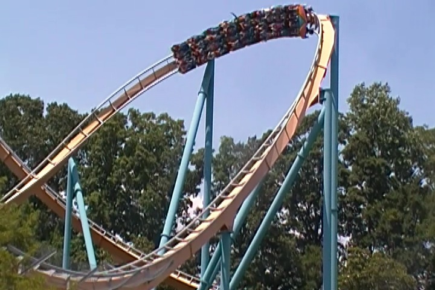
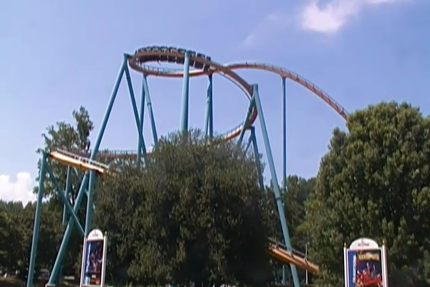
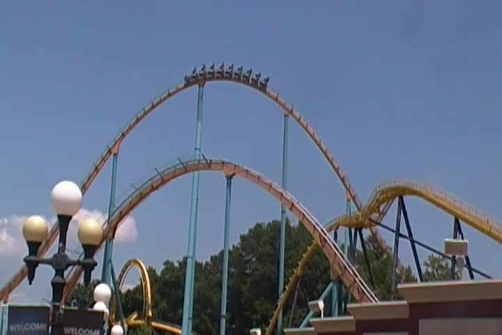

| |
Goliath Review

We're here at Six Flags Over Georgia. Today's ride we'll be reviewing for you is Goliath. This is definetly one of the better B&M Hyper Coasters. Hell, this personally is my favorite B&M Hyper Coaster. Yeah, Screw Nitro. This is the best Hyper B&M have done! Well, to be fair. Coaster enthusiasts LOVE B&M Hypers, and Goliath is pretty highly ranked. Anyways, let's ride. You then get in the car and pull down the clamshell lap bar. Now clamshells are awesome as you have a lot of freedom. But trust me. They keep you in. And we're off. We roll around a turn and start climbing up the lifthill. And thanks to the fact that the ride is essentially in the middle of the park, you get a great view of the entire park and the ride while climbing up. Which is good since aside from that, just trees and Georgia. Eventually we reach the top, and head down the first drop. It's a lot of fun, and definetly gets the speed rolling. Which...yeah. It's a hyper coaster. They all do that. Plus, this first drop has some good airtime going down. And speaking of airtime, there's a lot more coming right towards us. We roar right up into a big airtime hill, and yeah. There's a lot of it there. And...we're now out of the park. Yeah. Goliath does the same trick as Ghostrider where there's not enough room in the park for the ride. So f*ck it! Outside the park you go! We drop down, go around a turn, which may not give us many laterals, but it's still cool. And hey. We now get another giant airtime hill. So yeah. We soar over the hill, and simultaneously soar right out of our seats. Yeah. This is pretty good. It's going to get better. We rise up into another airtime hill. So yeah. We're out of our seat, getting more airtime. But we then head down into a downward helix. So we're out of our seats, before we get yanked down into this downward helix. And yeah. That thing really gives us quite a lot of Gs. I know people love the upward helix on Nitro, and yeah. It's fun. But compared to the downward helix on Goliath, it can eat sh*t. Seriously, I even grayed out a couple times on that downward helix. We then head over another airtime hill, and yeah. We fly out of our seats again. Head right into a sort of banked turn that doesn't really give us airtime, but there are some laterals, and it's a lot of fun. And then we get an airtime buffet ahead of us. Go over a hill, STRONG AIRTIME! The airtime that's not quite ejector, but really strong, and better than most floater air. Go over a hill, Strong Airtime. Go over a hill, Strong Airtime. We head around a turn, and head into this tiny little hill into the brake run. And yet, even that has a ton of airtime! It's like that little hill on Spongebob. Patheticly small, and yet, still ejects you from your seat somehow. And of course, ejector air into the brake run is always a great way to end a ride. Seriously, Goliath is great. My favorite B&M Hyper without a doubt, one of the best coasters B&M have ever created, and totally something you should check out when visiting Six Flags Over Georgia.
9/10
Location: Six Flags Over Georgia
Opened: 2006
Built by: B&M
Last Ridden: June 27, 2016
Goliath Photos










Home
|